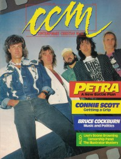

CMnexus
: Contemporary Christian culture, music, and media.
|
|
CCM, Oct 1987, vol. 10, iss. 4
| Cover |
|---|
|  | | Writers in this Issue |
|---|
Allison, Kevin
Anderson, Warren
Baker, Paul
Bowles, Sue
Brown, Bruce A.
Bunch, Darin
Donaldson, Devlin
Eischer, Mark
Fischer, John
Frazer, Robyn
Limberg, Vicki
Newcomb, Brian Quincy
Rabey, Steve
Smith, Sandy
Smith, Tim A.
|
Cover Feature:
- "Petra's Battle" by Brian Quincy Newcomb
Article:
- "Connie's True Colors" by Robyn Frazer
- "Bruce Cockburn's Social Gospel" by Steve Rabey
Christian Musician:
- "Greg Nelson on Producing and Songwriting" by Paul Baker
Notebook:
- "Enjoying The Moment" by Sandy Smith
- "We Got "Our" MTV"
Gospel Music Network
- "Censorship: Still A Burning Issue" by Bruce A. Brown
- "Biafra Porn Poster Charges Dropped" by Bruce A. Brown
- "Illustrator: Who Are These Guys?"
What's New:In Concert:
- "The Troubadour, Hollywood, CA" by Kevin Allison
- "Foursquare Worship Center, Watertown, SD" by Vicki Limberg
- "Living Word Christian Center, Minneapolis, MN" by Sue Bowles
- "Memorial Auditorium, Porterville, CA" by Darin Bunch
John Fischer:
- "An Editorial" by John Fischer
|
|